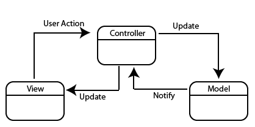

Hello Titanium
타이타늄 시작하기
rev.201406
이종은
인디 개발자
- TiDev.kr(한국 타이타늄 사용자 모임) 운영
- Titanium Certified Expert
- Titan


인사 나눠요~
- 이름,
- 수업을 통해 알고 싶은 것,
- 만들려고 하는 앱,
- 하고 싶은 말 (아무거나^^)
짝 프로그래밍?
- 문제에 부딪히기
- 문제임을 인식하기
- 해결 방법 의논하여 시도하기
- 공개하여 자극 받기
이렇게 해봐요!
- 일단 보고 듣습니다.
- 그 다음 해봅니다.
- 보여주며 물어봅니다.
강의 자료
http://192.168.0.51:8000
http://yomybaby.github.io/tilecture
Copy & Paste
http://192.168.0.51:8000/#copy
Link
http://192.168.0.51:8000/#link
강좌 내용
첫째날 - 타이타늄의 이해
- Javascript 이해
- Titanium UI 요소
- Alloy MVC Framework
- Widget과 Module 사용하기
강좌 내용
둘째날 - 앱 제작 실습
- Alloy Model (MVC의 이해)
- BaaS란?
- App - 회원가입/로그인
- App - 글목록
- App - 글작성
- App - 사진 업로드 or 댓글 작성
Titanium 동작 방식의 이해
기본편
keynote로 진행 - 16~22page
Slideshare 버전 보기1Javascript의 이해
비교 연산자 == vs ===
var one= 1, oneString = '1' , t = true;
console.log(one == oneString);
console.log(one == t);
console.log(oneString == t);
console.log(one === oneString);
console.log(one === t);
console.log(oneString === t);원시값의 복사
var p = 1;
var copyOfP = p;
p = 3;
console.log(copyOfP);
var myObject = {};
var copyOfMyObject = myObject;
myObject.foo = 'bar';
console.log(copyOfMyObject.foo);원시값의 비교
var p1 = 10;
var p2 = 10;
var p3 = new Number('10');
var p3_1 = Number('10');
var p4 = p3;
console.log(p1 === p2);
console.log(p1 === p3);
console.log(p3_1 === p3);
console.log(p1 === p3_1);
p4=10;
console.log(p4 === p3);복합 객체의 비교
var objectFoo = { name : 'jong' };
var objectBar = { name : 'jong' };
console.log( objectFoo === objectBar );
var objectA = { name : 'ti' };
var objectB = objectA;
console.log( objectA === objectB );객체 속성 접근방법
- object['property_name']
- object.property_name
var obj = {
name : 'MyObject'
};
var a = 'name';
console.log(obj.name);
console.log(obj["name"]);
console.log(obj[a]);함수는 1급 클래스이다.
변수, 배열, 객체에 저장될 수 있다는 뜻이다. 또한 함수에 전달될 수도 있고 함수에서 반환될 수도 있다. 그리고 함수는 객체이기 때문에 속성도 가지고 있다.
- "자바스크립트를 깨우치다" 중에서
var myFun = function(){
console.log('MyFun');
};
var yourFun = function(fn){
fn();
return function(){
console.log('return Fun');
}
};
var retFun = yourFun(myFun);
retFun();this
function fn(){
console.log(this);
}
fn();
new fn();arguments
var myFun = function(){
console.log(arguments[0]);
console.log(arguments.length);
console.log(arguments.join);
console.log(arguments.callee);
console.log([].join);
};
myFun(1,2,'333','Ti');
Hoisting
함수 선언문 먼저 해석하고 Excuete context에 추가
foo();
function foo() {
console.log('I am NOT Android');
}클로저
var z = "global";
function outerFn() {
var z = "local";
alert(newVal);
return function innerFn()
{
console.log(z);
}
innerFn();
}
var newVal = 't';
var f = outerFn();
f();
console.log(z);Tip
var a = (isTrue == true)? 'This is true':'This is false';var a = b || {}var a = callback && callback();Titanium 설정 하셨나요?
https://github.com/yomybaby/TiStudy/blob/master/SETTING_GUIDE.md- Titanium Studio
- Titanium SDK 버전
- Dashboard 설정 상태
- ti cli, tishadow, gittio 버전
- git 명령어
잠깐! 타이타늄 환경 설정 점검
- Ti Studio에서 프로젝트 생성
- 실습용 github 저장소 설정하기
- tishadow 확인하기
Gennymotion
ti config genymotion.enabled true- genymotion emulator를 titanium에서 사용하려면 위 명령어 한번 실행하여 설정
- Genymotion에 Google App 설치하기Google App 다운로드, 설치 관련 글
ts express ti cli에서 --shadow 옵션이 가능하도록 hook 설치
실습 준비
새 프로젝트를 생성하고 내용을 github에서 실습용 저장소의 내용으로 변경합니다.
ti create --platforms android --id net.bloter.myhelloti --name myHelloTi -d .
git clone --no-checkout https://github.com/yomybaby/HelloTi.git
mv HelloTi/.git myHelloTi/
rmdir HelloTi/
cd myHelloTi/
git reset --hard v.start
완료 후 Titanium Studio에서 import 하고 iphone 개발의 경우 tiapp.xml에서 iphone 체크
ti build -p ios --shadow
ti build -p android --device-id "Google Galaxy Nexus - 4.3 - API 18 - 720x1280" --shadow
ti build -p android -T device --shadow
iOS, Android 동시에 확인하려면
- ti build -p ios --tishadow
- ti build -p android --device-id "Google Galaxy Nexus - 4.3 - API 18 - 720x1280" --shadow
- ts server
- ts @ run -u
- app 재실행
준비완료! 출발!
이제부터 Titanium 시작입니다.
2. Titanium UI 요소
- View
- Window
- Control
iOS7 vs Android 4.4

원문 링크 바로가기
iOS7

원문 링크 바로가기
Android 4.4 (kitkat)

원문 링크 바로가기
View
다른 view나 컨트롤을 포함하고 있는컨테이너,
html의 div와 유사함. 뒤에 View로 끝남
<Alloy>
<View>
<ScrollableView></ScrollableView>
<Button>Hello Ti</Button>
</View>
</Alloy>Alloy vs Classic
<View backgroundColor="red">
<Button>Hello Ti</Button>
</View>var view = Ti.UI.createView({
backgroundColor : 'red'
});
var button = Ti.UI.createButton({
title : 'Hello Ti'
});
view.add(button);
Top level 컨테이너
Window, TabGroup, NavigationWindow(iOS).
화면에 보여주기위해 최소한 1개의 윈도우가 있어야 함. View를 상속받음.
<Window id="myWin">
<View>
<Button>Hello Ti</Button>
</View>
</Window>$.myWin.open();
Alloy vs Classic
<Window>
<View>
<Button>Hello Ti</Button>
</View>
</Window>var win = Ti.UI.createWindow();
var view = Ti.UI.createView();
var button = Ti.UI.createButton({
title : 'Hello Ti'
});
view.add(button);
win.add(view);
win.open();
Control
시각적 요소, 특정 기능/속성을 가지고 있음. View를 상속받음.
slider, button, label, switch..3. Titanium UI - Alloy 실습
- Allo MVC Framework란?
- View (.xml)
- Style (.tss)
- controller (.js)
MVC Framework
Not MVC (Class)
var win = Ti.UI.createWindow({
title:'My Window',
backgroundColor : '#fff'
});
var view = Ti.UI.createView({
borderColor : 'blue',
borderWidth : 1,
width : 300,
height: 100
});
var button = Ti.UI.createButton({
title : 'Hello Ti'
});
button.addEventListener('click',function(){
alert('click!');
});
view.add(button);
win.add(view);
win.open();Alloy MVC
View(.xml)<Window>
<View>
<Button id="btn"></Button>
</View>
<Window>Style(.tss)
"Window":{
title:'My Window',
backgroundColor : '#fff'
}
"View" : {
borderColor : 'blue',
borderWidth : 1,
width : 300,
height: 100
}Alloy MVC
Controller(.js)$.btn.addEventListener('click',function(){
alert('click!');
});
$.index.open();
크기 지정
Ti.UI.SIZE, Ti.UI.FILL
Buttons, labels, images, text fields and areas
= Ti.UI.SIZE
Windows, views, tables, webviews
= Ti.UI.FILL
Table rows
= width는 FILL하고 height은 SIZE에 맞게
단위
px, mm, cm, in, dp, dip, or system
tiapp.xml 에 기본 설정 지정
<property name="ti.ui.defaultunit">system</property>
위치 잡기
left, top, right, bottom
이 속성들은 크기와도 관련이 있다?
레이아웃 모드
vertical, horizontal, absolute
- horizontalWrap 속성
sibiling 간의 순서
- 기본동작
- zIndex 지정
Event 다루기
- UI 컨트롤(proxy)의 이벤트
- Alloy Controller의 이벤트
- Ti.App의 이벤트
Android와 iOS 따로 대응하기
파일로 구분
- image : native와 동일
- folder로 구분
- Alloy Controller 구분자
- Alloy Style 및 View에서 platform 속성
Alloy Widget과 Module
- Alloy Widget -alloylove.com
- Titanium Moduel -marketplace.appcelerator.com
종류가 많아서 좋지만 설정이 번거럽네요.ㅠ
gitt.io- Alloy Widget과 Module을 한방
- Widget 실습 - toasty
오늘은 개념 잡는 날
궁금하신 점?
내일은 앱 만드는 날
Thanks
내일 만나요~
var a=3;링크 모음
2014년 6월 16일 실습 프로젝트 저장소Alloy 예제 코드 모음
Titanium SDK 공식 문서
Bacbkone 0.9.2 문서
ACS my Apps 목록 보기
ACS Adapterbr